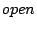
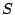
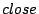

A bracket function has the form `   -> ' where and are literals acting as opening and closing parenthesis for sort . Examples are `(' and `)' in arithmetic expressions. In most cases, such brackets are only introduced for grouping and disambiguation, but have no further meaning. By adding the attribute bracket to the function declaration, it will not be included in the abstract syntax. The definition of a bracket function for the sort Expr is given below[ in Figure ]CODE:bracket-expr.
Since brackets are necessary for overruling the priority and associativity of functions, it is required that bracket functions are declared for the argument and result sorts of